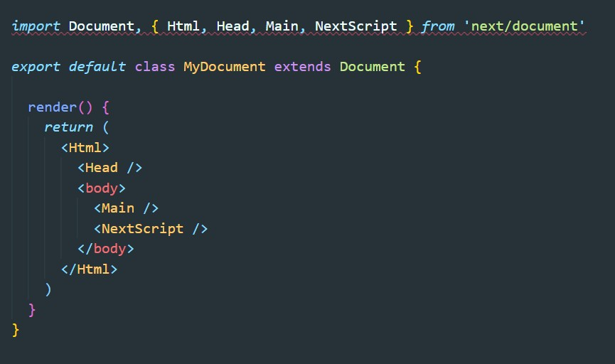

Document - это компонент в Next JS который может переопределить структуру html нашего приложения.
В папке Pages создаем файл с именем _document.js. В этот файл копируем код:
Исходный код можно скопировать здесь
В этом JSX мы можем прописывать что угодно в теге Head и все метатеги будут прописаны во всех html страницах нашего приложени.